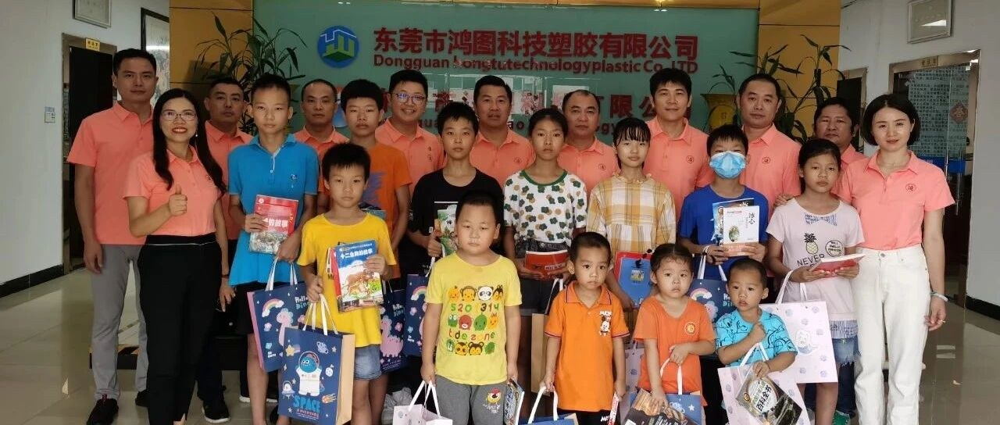

协会动态 2023-08-09 第二届理事会员就职典礼暨成立七周年庆典活动举行 8月8日，协会在常平举办第二届理事会员就职典礼暨成立七周年庆典，市镇相关部门、常平各商协会与全体会员共聚一堂。 阅读全文 →
党建引领 2021-08-17 常平个私协党支部开展「爱心助学进企业」活动 协会党支部走进常务副会长企业，为企业员工子女送去课外读物，以党建引领会务发展、服务广大会员。 阅读全文 →
 公益帮扶
公益帮扶